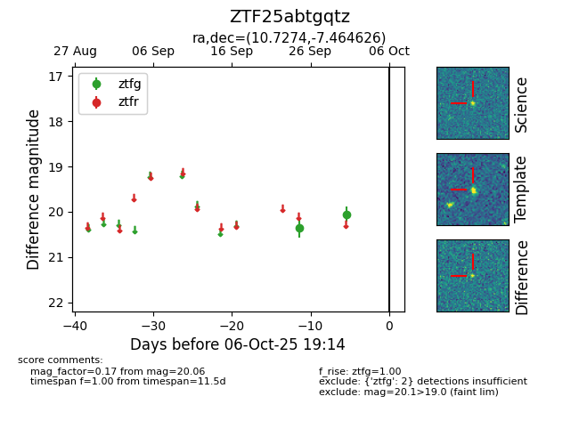

FINK: ZTF25abtgqtz
Lasair: ZTF25abtgqtz
ALeRCE: ZTF25abtgqtz
ZTF25abtgqtz (ztf,fink)
equatorial (ra, dec) = (10.7274,-7.46463)
galactic (l, b) = (116.6702,-70.23262)

last ztfg=20.06
2 ztfg detections